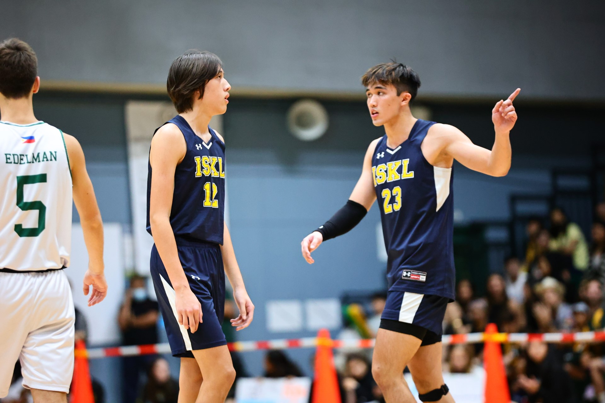

Raised abroad
I'm American-Malaysian. My dad was born and raised in Midland, Texas, and my mom in Kuala Lumpur, Malaysia. I spent the first ten years of my life in Hong Kong and Taiwan. I then spent a year and a half being homeschooled by my parents while we travelled around Europe. The rest of my education was completed in international schools in Taipei and Kuala Lumpur, before I moved here to attend BYU.
Though I've moved around a fair bit, Malaysia is home for me. I spent the entirety of my middle school and high school careers there, and I loved every bit of it.
This I love
I'm a big sports guy. Since I was little, I loved the sport of basketball. Though my taste in teams has changed - from idolizing the 90s Bulls as a kid to loving the Golden State Warriors now - my affection for the game stayed strong. Not only do I watch basketball games several times a week, I've also dedicated endless hours in my life to playing the sport. That being said, I do enjoy other sports as well - I participated in several seasons of varsity volleyball and track & field.
I also love music. My favorite artist of all time is Taylor Swift. Aside from that, however, I also listen to a lot of other genres of music, such as indie, alternative, hip hop, and soundtracks. I also enjoy creating music, and have spent time in the past playing piano, guitar, and cello.
There's nothing I love more than a good TV show. Or movie. Here's a list of my top five TV Shows of all time (though it frequently fluctuates):
- Friends
- Stranger Things
- Suits
- The Last Dance
- Arrow
And here are some of my favorite movies...
- Free Guy
- Dune
- Interstellar
- Any Harry Potter movie
- Any Star Wars movie (but not the Disney ones)
Some more general knowledge
I have three siblings: two brothers, and one sister. I also have two cats - Muffins and Helena. Aside from the hobbies listed above, I also enjoy a number of different things, like painting, hiking, and working out. My favorite city was/is(?) San Francisco, and my favorite food is just a straight-up cheeseburger. My personal idols are Michael Jordan and Chandler Bing - may he rest in peace.
I can accept failure, everyone fails at something. But I can't accept not trying.
- Michael Jordan
I'm not that great at advice. Can I interest you in a sarcastic comment?
- Chandler Bing